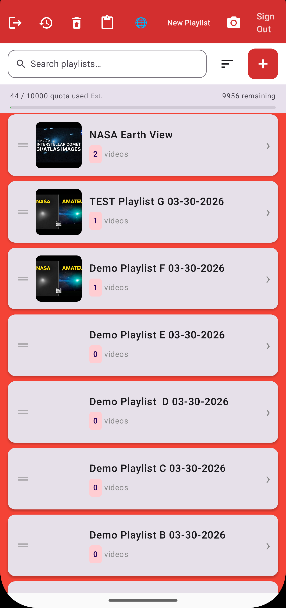
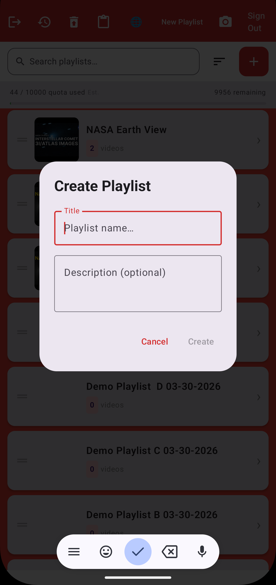
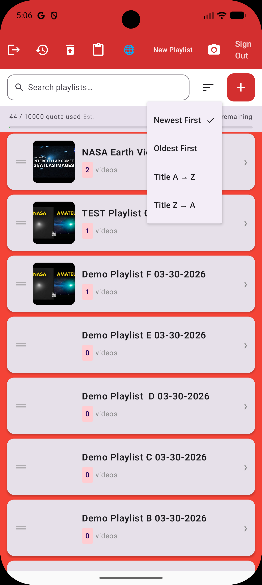
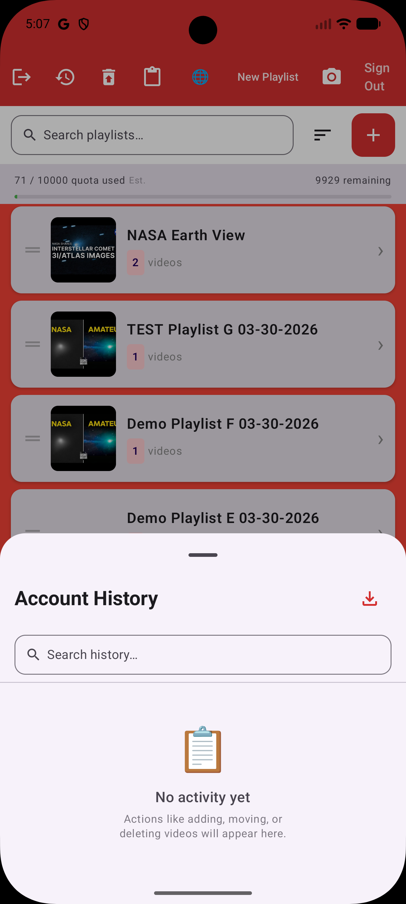
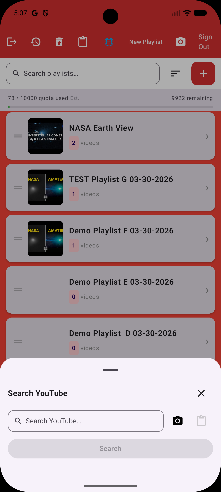
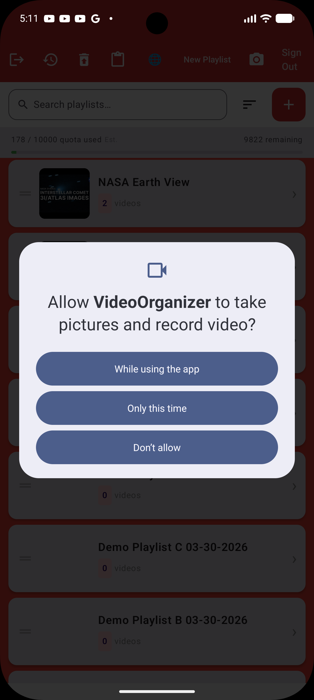
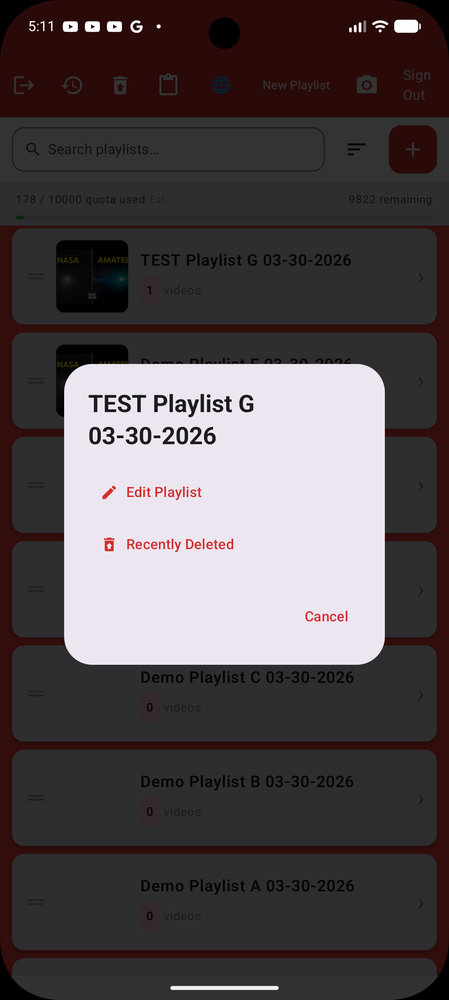
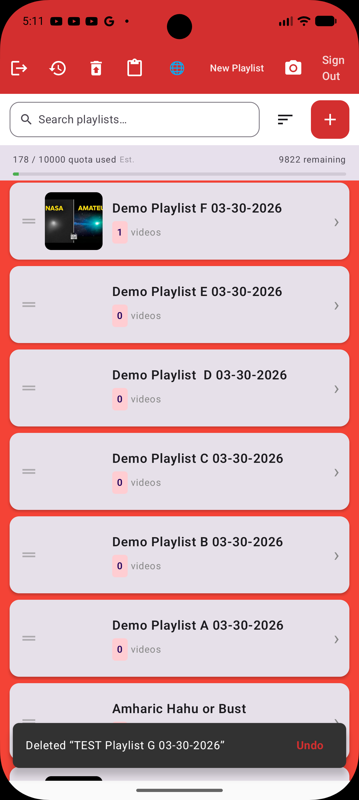
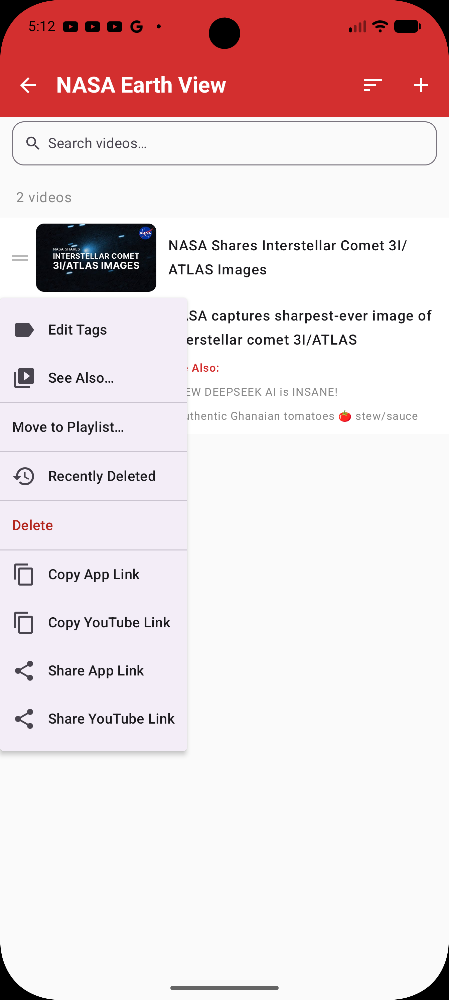

Designed for Everyday Playlist Management
The app keeps the interface simple while still giving you the tools you need to browse, sort, create, search, and manage playlists efficiently.

Browse and organize with a clean playlist view
The main playlist screen makes it easy to review your content at a glance. You can see playlist names, counts, thumbnails, and quickly move into the actions you need.
- Clean list-based layout for fast scanning
- Playlist thumbnails and item counts visible up front
- Designed for touch-first Android interaction
Key Screens
Here are some of the core interactions that make VideoOrganizer useful on Android.

Create New Playlists
Add playlists with a simple, direct creation flow for title and description.

Manage Real Playlist Libraries
Handle larger playlist collections with a layout that stays readable and organized.

Sort Your Playlist View
Change the view order with clear sort options such as newest, oldest, and title order.

Search and Add Content
Use the search flow to find YouTube content and prepare it for playlist organization.

Track Account Activity
Review activity history through a dedicated screen that keeps actions visible and easy to follow.

Recently Deleted View
Recover context quickly with a recent deletion screen that helps keep playlist management safer.

Edit and Restore Options
Access edit and recently deleted actions from a focused playlist actions dialog.

Native Android Permissions
Android permission prompts appear cleanly inside the flow when camera access is requested.